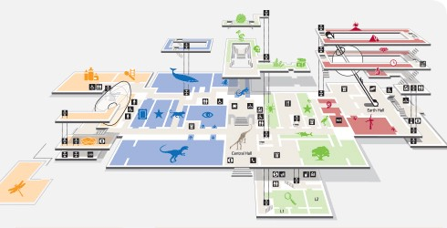

Enhancing Indoor Navigation Experiences
Academic Project Intent
This is a proposal I wrote for a thesis project, but found something more compelling to work on.
Alternate approach to indoor way finding with reduced dependency on precise positioning and point-to-point “routes”
Indoor Positioning System (IPS)
Legibility has been a high priority in traditional architecture, with strong emphasis on symmetry and order. As buildings became larger and their functions more complex, like in airports, legibility slipped below operational requirements. Shopping malls are deliberately designed with minimised legibility to make users spend more time in the mall. Other buildings are just so large that that it is tedious to find spaces inside, such as a multi specialty hospital, a student hostel block of 300+rooms, or large departmental stores with over a million products. Signs and notices fail to scale effectively, creating the need for a live positioning tool in addition to a map indexing the building’s “contents.”
Positioning technology such as BLE and Wifi triangulation is barely a few years old, and there are already a number of service providers who can map buildings and make them available on apps for visitors. Many leverage the technology and provide detailed analytics of people, traffic, operations, etc. Apple’s iBeacon and Google’s Eddystone (open source) are the two main protocols on which many developers are building useful indoor navigation tools. Manufacturers such as Estimote, Blesh, make beacons that are easy to set up and operate on this platform.
The state of indoor navigation today (June 2016) focuses primarily on providing step by step navigational instructions to the user trying to get from point A to B. It appears to carry baggage from the outdoor navigation system that has had several years to evolve to suit the needs of a driver who is unfamiliar with the city. Many founders even unapologetically describe their products as “GPS for indoors” and most concept videos depict users holding up their phone at all times.
Shedding the Baggage- Key Differences
There are a few important differences to note between indoor and outdoor navigation that may seem obvious but make a considerable difference to the design approach.
A user is almost expected to overshoot and re-orient. Unless, of course, their eyes are glued to their phone for every next step. Image from Insoft’s airport navigation system concept video.
The overarching principle of most navigation systems seems to be detail oriented and precise to every step, delivering a blinkered navigational experience. Precise location will benefit the user in the last few meters of trying to locate something. It may be called upon to reorient a user if he gets lost along the way, but it is not very good design sense to delegate all navigational responsibility to it.
Navigating buildings like you know them
There are three preliminary angles to enhancing way-finding that would be interesting to explore.
Additionally, knowledge of fire exits and other safety precautions makes a big difference in times of crisis in a way that a live application cannot.
A schematic overview such as this could be seamlessly linked to detailed views in an interactive map. Source.
From this starting point, the following areas need to be probed to guide the design of such navigational aids
Process Outline
The focus of the project will be to explore all ways to minimise the need to frequently check with the tool for precise positioning.
Summary
To summarise, the thesis is that indoor navigation is a complex problem and the experience can be made more natural and intuitive with the right information. When the tool fails to provide that information, users will need the crutches of precise positioning and end up with a suboptimal experience. The objective of the project will be to design indoor navigation aids that may take a few seconds to read/watch, and are clear and memorable enough that users won’t have to keep referring to them except to look up something specific.